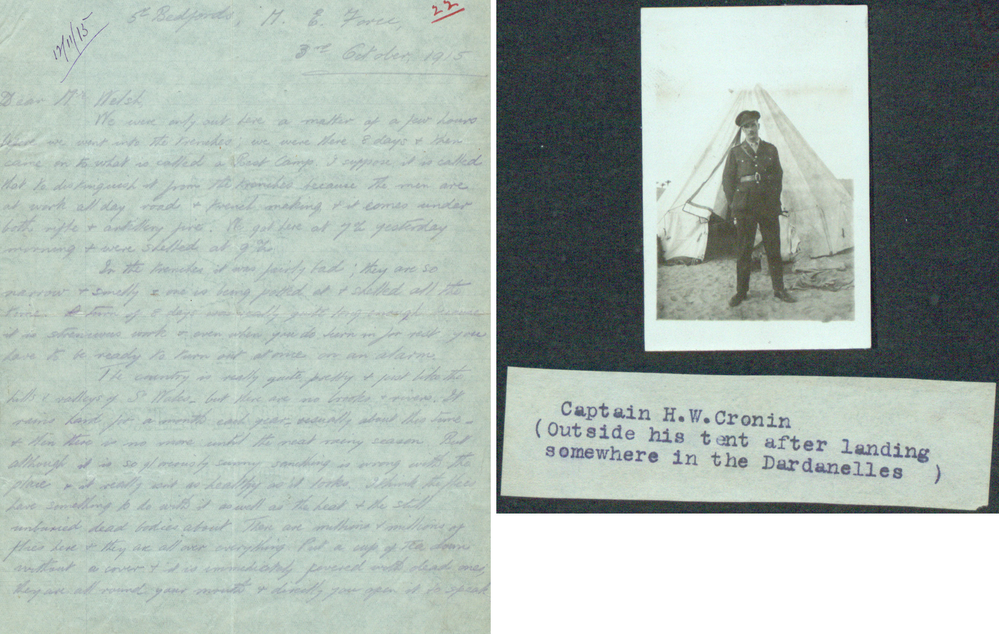

Welcome to the World War Letters Homepage.
Our goal was to find if there is any coorilation between different aspets of the wars and the moral of the troops. To do this our group analyzed
letters written by troops throughout the war. There are a few different aspectes we used to analyze this data and this can be found on the analysis
page.
This site was developed by Alex Lavelle, Ben McCoy, Brooke Moon, and Alec Woods as a group project for the Digital Humanities course
at The University of Pittsburgh, Greensburg.
Transcribing letters is not an easy task, luckily for us The National Archives keeps
a database with dozens of letters for us to work with. The site keeps both the original letters and has them all transcribed for easier reading.
Here is the original document for Dardanelles: ‘millions of flies’.

Please visit their site @ http://www.nationalarchives.gov.uk/ for more information. All credit for the letters goes to them.